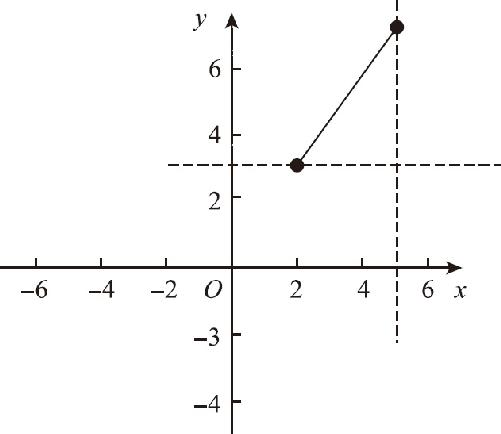
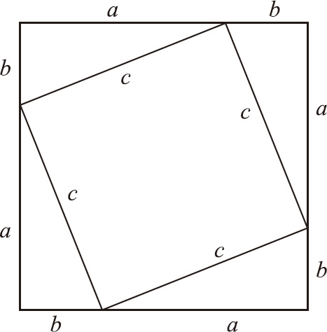
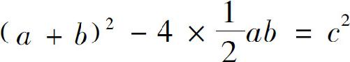
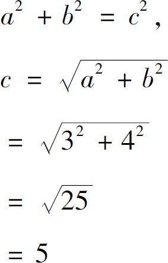
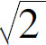
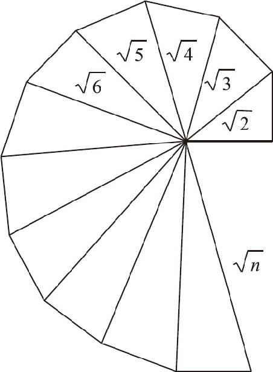
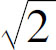
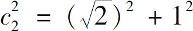
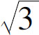
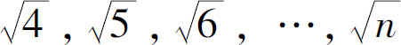

通过解析几何的帮助，可以把几何问题转换为代数问题，但这并不意味着几何学只能处于从属地位．有一个看起来极其简单的问题，必须依靠几何的帮助才能解决．这是一个什么问题呢？求取任意两点间的距离，比如（2，3）到（5，7）这两点之间的直线段的距离等于多少？假如我们把这两点的坐标画出来就会发现，这两点之间的连线，它既不是水平的，又不是垂直的，它和x 轴、y 轴都有一个夹角．在这种情况下，用代数方法求解，只能拿一根尺子量一量．用几何方法，只能叉开圆规测量一下，再到坐标轴上去对比，仍然得不到精确结果．要想解决这个问题，必须要靠代数与几何通力合作才行．接下来我们就一起来分析．
两点之间的连线是斜线不要紧，我们可以先把它转换成两条直线，首先，我们经过（2，3）这一点作一条x 轴的平行线，然后再过（5，7）这一点作一条y 轴的平行线．（如图13－1所示）于是，在这两条平行线和斜线之间就形成了一个直角三角形：三角形水平的直角边的长度，等于两点横坐标的差；垂直的那条直角边的长度，等于纵坐标的差．经过计算不难得出，该直角三角形的两条直角边的长度分别是3和4，它的斜边长度就可以求得了．此时，需要借助几何学，来探究一下直角三角形的三边关系．

图13－1
首先，我们假设这个直角形的两条边的长度分别是a 和b ，再假设它的斜边长度是c ，现在我们就试一试，看看这个c 能不能通过a 和b 的加减乘除来表示．为了研究这个问题，我们可以把四个同样的直角三角形首尾相接，拼合成如图13－2所示的形状．

图13－2
如图13－2所示，当四个直角三角形斜边朝内摆在一起时，中间和外围刚好拼成了两个正方形，内部的正方形边长就是原三角形的斜边c ，外围的正方形边长正好就是原三角形的两个直角边a 与b 的和．那么，这两个图形真的是两个完美的正方形吗？是否任意四个直角三角形都能拼合为这样形状呢？让我们来分析一下．
首先，外围正方形的四个角都是原三角形的直角；其次，两条直角边a 和b 是可以拼合成一条直线的；最后，当四个边长都是a ＋b 的时候，我们就组成了一个四边相等、四个角都是直角的四边形．因此，外围的图形一定是正方形．那么内部的四边形呢？首先，我们可以知道它的四边都等于斜边c 的长度；其次，它的四个角度都等于平角先后减去直角三角形的两个锐角．由于直角三角形两个锐角之和一定等于90°，所以它的四个角也一定是直角．所以，内部的图形也一定是正方形．于是，我们就可以根据这几个图形的面积关系，推断出直角三角形的三边关系了．
根据图示，内部的正方形面积等于外围的正方形面积减去四个直角三角形的面积．

，左式展开，得到a 2 ＋2ab ＋b 2 －2ab ＝c 2 ，
化简，得到a 2 ＋b 2 ＝c 2 ．
也就是说，在任意一个直角三角形中，斜边平方等于两个直角边的平方和．早在数千年前，古代中国、古代希腊和古代印度的数学家们都曾经独立地发现了这个定理．按照中国的传统习惯，我们常把直角三角形中，较短的一条直角边叫作勾，较长的直角边叫作股，直角三角形的斜边叫作弦，所以这个定理又被叫作勾股定理．据说这个定理的证明方法有400多种，但要证明这个定理，必须要依靠代数知识和几何知识的巧妙结合．当然，这个定理的完整证明是古希腊的毕达哥拉斯首先完成的，因此西方普遍把这个定理称为毕达哥拉斯定理．
证明了勾股定理以后，我们就可以计算平面上任意两点之间的距离了．在刚才的题目中：直角三角形的两条直角边分别是3和4，假设斜边长是c ，根据勾股定理可知：

3、4、5，多么和谐的一组数字啊，在我们中国，勾三股四弦五一直就是对勾股定理的简称．但可惜的是，并非所有的整数都符合勾股定理的这种关系，我们把符合这种条件的整数叫作勾股数，这些数字除了3、4、5之外，还有5、12、13，当然，它们的整数倍同样符合平方和的这种关系，但是大部分的整数就没这么幸运了，比如，两个直角边都等于1的直角三角形，它的斜边长度就等于

，倒霉的希帕索斯就是因为这个 的问题白白牺牲了．不过，勾股定理带给我们一种通过几何作图求解无理数的办法：可以不断在纸上作出一个个如图13－3所示的直角三角形，这样所有自然数的平方根就依次展开了．

图13－3
首先，我们通过两个边长为1的直角三角形，就可以得到一条长度为

的斜边c 1 ，然后我们再以 作为一个新的直角边，垂直于它继续作出一个边长为1的直角边，于是新的直角三角形的斜边长度
，因此新的斜边长度就是
，随后再次重复上述过程，就可以依次得到
，随着这些三角形的斜边越来越长，这些三角形会形成一条漂亮的螺旋曲线．通过勾股定理的证明过程，我们可以感受到几何学和代数学融合以后产生的巨大威力．那么，对于相对复杂的二次函数，解析几何又能提供哪些帮助呢？